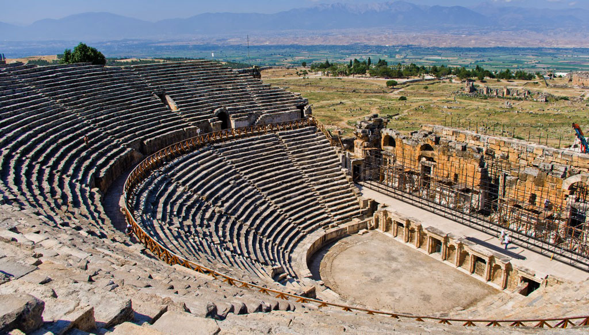
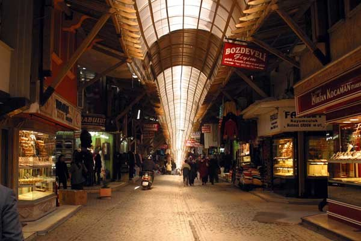

| Home | Locale Dishes | Historical Places | Useful Links | About Me | Contact Me | Registration |
|---|
Pamukkale
Denizli ilinin bir ilçesi olan Pamukkale, travertenleri ile turizm açısından büyük bir öneme sahiptir. Akan sulardan kalan karbonat mineralleri ve kent kaplıcalarını kapsayan Pamukkale Travertenleri, Menderes Nehri'nde bulunmaktadır. Hem Türkiye'nin hem de Denizli'nin sembolü durumda olan bu doğal alanda çıkan su kaynaklarının içindeki karbondioksitin uçması ve su içerisindeki kalkerin çökmesi ile kristalleşmiş olan travertenler, mucizevi bir güzelliği sahiptir. Bu eşsiz, doğal ve pamuk tarlasını andıran alan aynı zamanda UNESCO Dünya Miras Listesi'ne alınmıştır. Türkiye'nin Ziyaret edilesi yerlerinden olan Pamukkale Travertenleri, en beyaz haliyle sizi şaşırtmayı bekliyor. Bu arada bölgedeki büyüleyici güzelliğe sahip Yeşildere Şelalesi'ni de ziyaret etmeyi unutmayın.

Hierapolis
Hierapolis was an ancient city located on hot springs in classical Phrygia in southwestern Anatolia. Its ruins are adjacent to modern Pamukkale in Turkey and currently comprise an archaeological museum designated as a UNESCO World Heritage Site
Kaleiçi
Denizli’nin Anadolu Selçukluları zamanındaki ilk yerleşim yeri bugünkü Kaleiçi ve çevresi olduğu ve burada iç kale ve dış kaleden oluşan surun varlığı bilinmektedir. Ancak zamanla dış surlar tamamen yok olmuş ve iç surların bazı bölgelerde izleri mevcuttur. Kaleiçi’ndeki yerleşimin 11. yüzyıl’da başladığı bilinmektedir. Kaleiçi ilk kez Selçuklular zamanından başlayarak, Ladik Beyliği daha sonra Germiyan Beyliği, İnançoğulları Beyliği ve Osmanlı İmparatorluğu döneminde kullanılmıştır. Denizli ilinin en eski ve günümüzde de halen önemli tarihi ve turistik bir arastasıdır. Tarihi Kaleiçi Çarşısı’nda yok olmaya yüz tutmuş kuyumculuk, bakırcılık, demircilik gibi geleneksel el sanatları ürünlerinin üretim ve satışı yapılmaktadır.
